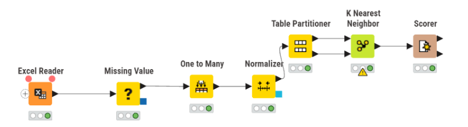
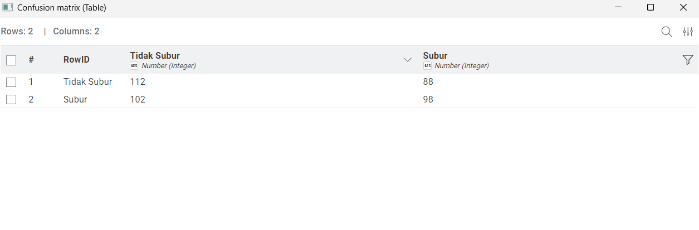
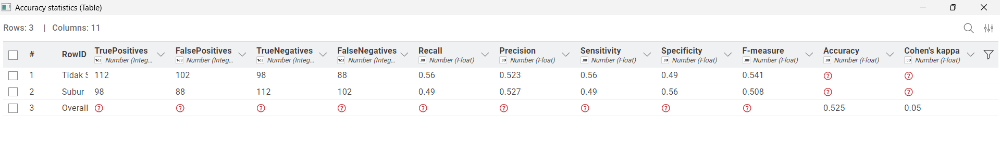

Jawaban UTS#
Pemrosesan Data#
Dalam analisis data menggunakan algoritma berbasis jarak seperti KNN, fitur dengan skala yang berbeda dapat menyebabkan bias. Oleh karena itu, dilakukan pemrosesan Min-Max Normalization untuk menyamakan skala seluruh fitur numerik ke dalam rentang 0 hingga 1.
Rumus Min-Max Normalization:
Contoh Perhitungan:
Misalkan kita mengambil satu sampel data pada fitur pH Tanah dengan nilai asli (\(X\)) sebesar 6.5.
Berdasarkan dataset, diketahui:
Nilai minimum pH (\(X_{min}\)) = 3.5
Nilai maksimum pH (\(X_{max}\)) = 9.0
Maka perhitungan normalisasinya adalah:
Proses ini diulangi secara otomatis oleh sistem untuk semua fitur numerik (seperti N Total, P Tersedia, Kadar Air, dll.) pada seluruh baris data sebelum masuk ke tahap pelatihan model.
Analisis K-Nearest Neighbors#
Algoritma K-Nearest Neighbors (KNN) bekerja berdasarkan prinsip kemiripan. Untuk mengukur seberapa “dekat” atau mirip sebuah data uji baru dengan data latih yang sudah ada, digunakan metode perhitungan Euclidean Distance.
Rumus Euclidean Distance:
Keterangan:
\(d(x, y)\) : Jarak antara data uji (\(x\)) dan data latih (\(y\))
\(n\) : Jumlah fitur yang dibandingkan
\(x_i\) : Nilai fitur ke-\(i\) pada data uji
\(y_i\) : Nilai fitur ke-\(i\) pada data latih
Contoh Proses Klasifikasi (\(k = 5\))#
Hitung Jarak
Sistem menghitung jarak menggunakan rumus Euclidean antara satu data uji yang ingin diprediksi dengan seluruh data latih menggunakan nilai yang telah dinormalisasi.Pengurutan
Hasil seluruh perhitungan jarak kemudian diurutkan dari nilai terkecil (paling mirip) hingga terbesar.Pemilihan Tetangga
Karena menggunakan nilai \(k = 5\), maka diambil 5 data dengan jarak terkecil (tetangga terdekat).Majority Voting
Dilakukan pemungutan suara berdasarkan label dari 5 tetangga tersebut.
Contoh:4 data berlabel “Subur”
1 data berlabel “Tidak Subur”
Maka hasil prediksi: Subur
Logika Workflow KNIME#
Workflow ini dirancang untuk mengklasifikasikan tingkat kesuburan tanah dengan mengikuti tahapan standar Data Science Life Cycle:
Excel Reader
Tahap Data Ingestion untuk membaca dataset kesuburan tanah dari file.xlsx.Missing Value
Tahap Data Cleaning.Fitur numerik (Integer & Float) diisi menggunakan nilai Median
Fitur kategori (String) diisi menggunakan Most Frequent Value (Modus)
One to Many
Tahap Feature Encoding.
Kolom Tekstur Tanah diubah menjadi representasi numerik (0 dan 1) agar dapat diproses oleh algoritma KNN, sementara kolom Label tetap dipertahankan sebagai target.Normalizer
Tahap Feature Scaling.
Seluruh fitur numerik diseragamkan ke rentang 0.0 – 1.0 agar tidak ada fitur yang mendominasi perhitungan jarak.
Kolom ID dikecualikan dari proses ini.Partitioning
Data dibagi menjadi:80% Training Set
20% Testing Set
K Nearest Neighbor (KNN)
Proses klasifikasi dilakukan dengan:Nilai K = 5
Kolom target mengacu pada Label
Scorer
Tahap evaluasi untuk membandingkan hasil prediksi model dengan data aktual.
Konfigurasi Node (Implementasi)#
Berikut adalah detail konfigurasi pada setiap node utama yang digunakan:

Node |
Konfigurasi Utama |
Penjelasan |
|---|---|---|
Missing Value |
Number: Median |
Mengatasi data kosong agar tidak terjadi error saat perhitungan jarak |
One to Many |
Include: Tekstur Tanah |
Mengubah data kategori menjadi biner tanpa mengubah target |
Normalizer |
Exclude: ID |
ID tidak dinormalisasi karena bukan fitur penting |
Partitioning |
Relative Size: 80% |
Membagi data untuk training dan testing |
KNN |
k = 5, Class: Label |
Menentukan klasifikasi berdasarkan 5 tetangga terdekat |
Scorer |
1st: Label |
Mengukur performa model (akurasi, dll.) |
Confusion Matrix#
Berdasarkan hasil pengujian pada 400 sampel data uji, diperoleh nilai sebagai berikut:
True Positive (TP) = 98 → Data Subur diprediksi Subur
False Positive (FP) = 88 → Data Tidak Subur diprediksi Subur
True Negative (TN) = 112 → Data Tidak Subur diprediksi Tidak Subur
False Negative (FN) = 102 → Data Subur diprediksi Tidak Subur

Gambar diatas menunjukkan confusion matrix yang dihasilkan dari node Scorer, dimana terdapat 98 data yang benar diprediksi sebagai Subur (True Positive), 88 data yang salah diprediksi sebagai Subur (False Positive), 112 data yang benar diprediksi sebagai Tidak Subur (True Negative), dan 102 data yang salah diprediksi sebagai Tidak Subur (False Negative).Hasil Evaluasi dan Perhitungan Manual#

Gambar diatas menunjukkan hasil evaluasi model KNN dengan nilai akurasi sebesar 52,5%. Nilai ini menunjukkan bahwa model masih memiliki banyak kesalahan dalam klasifikasi, sehingga perlu dilakukan perbaikan lebih lanjut seperti tuning parameter K atau mencoba algoritma lain.A. Perhitungan Akurasi (Overall Accuracy)#
Akurasi mengukur proporsi prediksi yang benar dari keseluruhan data uji.
Sehingga diperoleh nilai akurasi sebesar 52,5%.
B. Perhitungan Precision (Kelas Subur)#
Mengukur ketepatan model dalam memberikan prediksi kelas Subur.
Sehingga diperoleh nilai precision sebesar 52,7%.
C. Perhitungan Recall / Sensitivity (Kelas Subur)#
Mengukur kemampuan model dalam mendeteksi seluruh data yang benar-benar termasuk kelas Subur.
Sehingga diperoleh nilai recall sebesar 49,0%.
D. Perhitungan F1-Score (F-measure)#
Merupakan rata-rata harmonis antara Precision dan Recall.
Sehingga diperoleh nilai F1-Score sebesar 50,8%.#
Analisis Hasil#
Berdasarkan hasil evaluasi, model KNN dengan nilai K = 5 menghasilkan performa yang masih tergolong rendah, dengan akurasi hanya 52,5%. Hal ini menunjukkan bahwa model belum mampu mengklasifikasikan data dengan baik.
Nilai recall yang lebih rendah dibandingkan precision mengindikasikan bahwa model masih kurang baik dalam mendeteksi data dengan label Subur. Oleh karena itu, diperlukan peningkatan performa model, seperti:
Melakukan tuning nilai K
Menambahkan fitur yang lebih relevan
Menggunakan metode klasifikasi lain sebagai perbandingan
Kesimpulan#
Berdasarkan hasil analisa dan implementasi yang telah dilakukan terhadap dataset kesuburan tanah menggunakan algoritma K-Nearest Neighbors (KNN), dapat disimpulkan beberapa poin utama sebagai berikut:
1. Efektivitas Algoritma#
Algoritma KNN berhasil diimplementasikan dengan baik melalui perangkat lunak KNIME Analytics Platform. Penggunaan nilai \(k = 5\) memungkinkan model untuk melakukan klasifikasi berdasarkan mayoritas tetangga terdekat dalam ruang fitur yang telah dinormalisasi.
2. Performa Model#
Hasil pengujian menunjukkan:
Akurasi sebesar 52,5%
Presisi sebesar 52,7%
Recall sebesar 49% untuk kelas Subur
Meskipun hasil ini sudah melampaui ambang tebakan acak (random guessing), nilai tersebut mengindikasikan bahwa dataset memiliki tingkat kompleksitas dan variansi yang cukup tinggi.
3. Pengaruh Preprocessing#
Keberhasilan proses klasifikasi sangat dipengaruhi oleh tahap:
Data Cleaning (penanganan missing values)
Normalization
Pengisian data kosong menggunakan nilai median memberikan stabilitas pada data numerik, namun juga berpotensi menyebabkan tumpang tindih (overlapping) nilai antar kelas yang berdampak pada penurunan akurasi model.